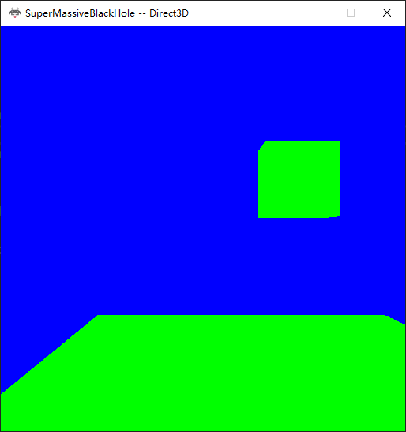

We Generate a binary for geometries using the lua files generated from Maya.
Here is a binary files use in this project describing a cube
geometry datas are stored in the following order, vertex count(before blue bar), index count(between blue and red bars), vertex data(between red and green bars), index data(after green bar to the end of the file).
the binary files generated for different plateform should be different, cause d3d11 and opengl has different winding orders. One purpose of having binary files is to do less work during runtime. Hence geoemtry files should have different winding order for opengl and d3d11
Codes to extract those data from binary files
The other advantage of using binary files is binary files would be smaller(Hence load faster) that the corresponding human-readable files, For example A sphere of 1560 vertices would have a human-readable file of 56kb while the binary file of it is 23kb,The human-readable file takes 0.018051 seconds to load,The binaryfiles takes 0.0008 seconds to load.